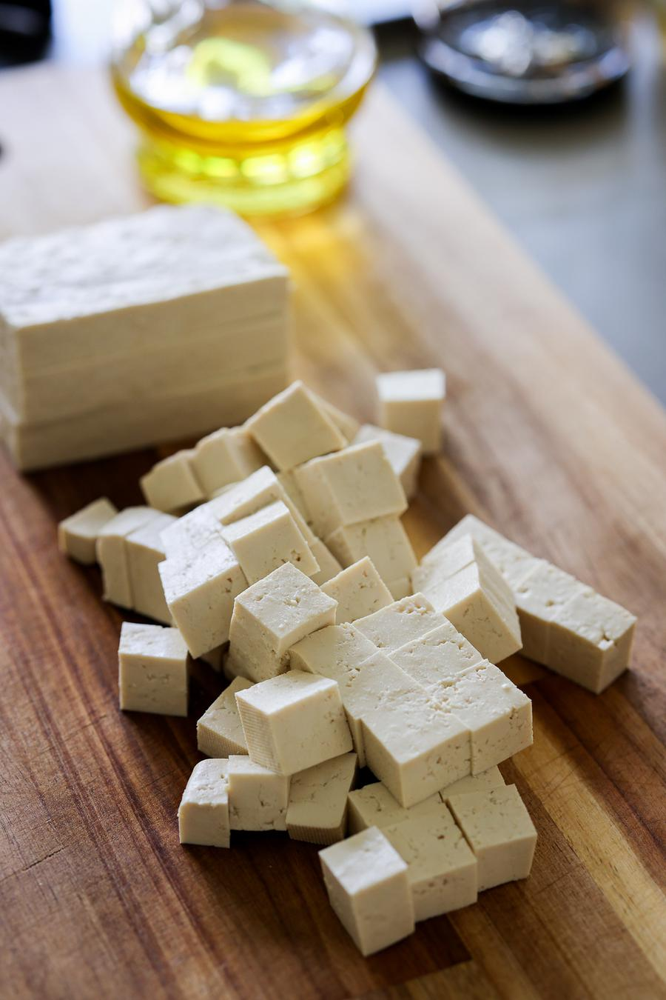
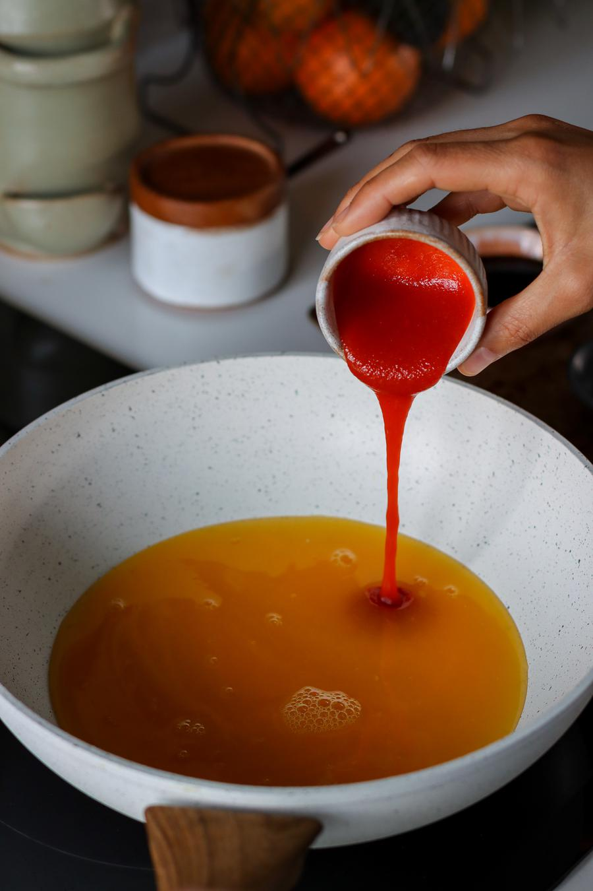

Sticky Orange Glazed Tofu

- 🍽️Servings: 2
- 🍝Total time: 40 min
- ⏱️Prep time: 10 min
- 🧑🏻🍳Cook time: 30 min
Ingredients
Tofu
- 11.4 oz (325 g) firm tofu, pressed
- 1 Tbsp (15 mL) olive oil
- 1 Tbsp (8 g) cornstarch
- ½ tsp salt
Orange glaze
- 1 cup (240 mL) orange juice
- 2 cloves garlic, crushed
- 1½ Tbsp (22 mL) sriracha hot sauce, or less if you prefer less spicy
- 2 Tbsp (30 mL) sodium-reduced soy sauce
- ½ Tbsp (3 g) freshly grated ginger
- 1 Tbsp (15 mL) rice vinegar
- 1 Tbsp (8 g) cornstarch
Optional garnish
- sliced green onion
- toasted sesame seeds
Directions
- Preheat the oven to 390°F (200°C). Cut the pressed tofu into ½ inch (1 cm) cubes.

- To a large bowl, add the tofu, oil, cornstarch, and salt. Gently toss to coat.
- Spread the tofu evenly over a parchment-lined baking tray and bake in the oven on the centre rack for 20 - 25 minutes, flipping the pieces halfway through baking.
- To a large pan, add the orange juice, garlic, sriracha, soy sauce, ginger, vinegar, and cornstarch. Note, do not turn on the heat yet. The cornstarch must be added and stirred into cold liquids, otherwise it will clump. Once whisked, heat the sauce and let simmer for 4 - 5 minutes, stirring often until thickened.

- Add the baked tofu cubes to the pan and stir to coat. Cook until most of the liquid has been absorbed by the tofu.
- Serve with rice and veggies if desired, garnish, and enjoy!
Storage
- Store in an airtight container in the fridge for up to 3 days.